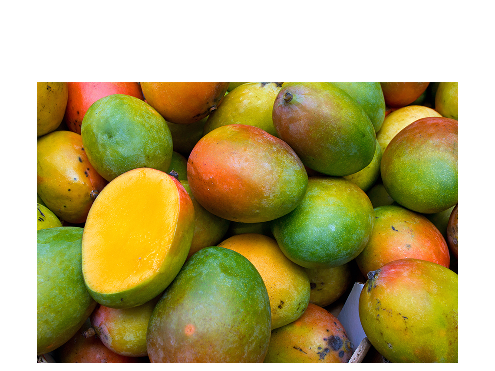
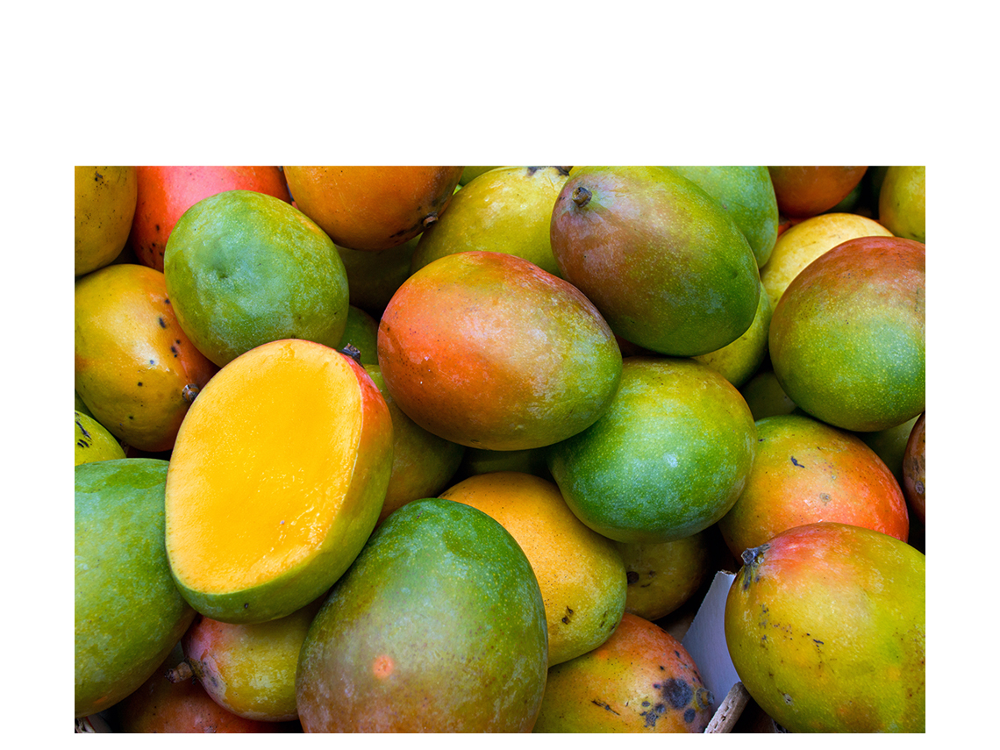

Mango
October 26 2021,
Jelena Cvetković Š.
|
Nutrition Facts |
|
| Serving size | 165 g |
| Amount per serving | |
| Calories |
99 |
| % Daily Value* | |
| Total Fat 0,6g | 1 % |
| Saturated Fat 0,2g | 1 % |
| Sodium 1,7mg | 0 % |
| Total Carbohydrate 25g | 9 % |
| Dietary Fiber 2,6g | 9 % |
| Sugar 23g | |
| Protein 1,4g | 3 % |
| Vitamin D 0mcg | 0 % |
| Calcium 18mg | 1 % |
| Iron 0,3mg | 2 % |
| Potassium 277mg | 6 % |
| * The % Daily Value (DV) tells you how much a nutrient in a serving of food contribute to a daily diet. 2,000 calories a day is used for general nutrition advice.
**Source: www.nutritionvalue.org |
|
JUICY. Mango is a tropical fruit that is very tasty, sweet, creamy and has a number of possible health benefits. The fruit flesh is soft and juicy as it contains a lot of water and this makes the fruit very refreshing.
The delicious mango is rightly called the king of fruits. The fruit is extremely juicy, sweet and aromatic. It is popular in cooking as an addition to desserts, ice cream, fruit salads and cocktails.
According to Indian tradition, mango redirects us to pleasant and loving, so mango holds the reputation of being a "fruit of love". In India, it is even credited with mysterious power.
Over 5,000 years agso mangoes were first grown in India.
In Ayurveda, they say that every part of the mango tree is useful - seeds, flowers, fruits and bark.
Mango is rich in vitamins, minerals and antioxidants and is a healthy source of low fat carbohydrates.
Benefits
All the mango positive properties on our body scientists have not fully discovered. To date, research confirms that mango due to its rich nutrients is effective in many diseases, has a positive effect on digestion, cardiovascular disease, diabetes, libido, anaemia and cancer. It is also used to improve the condition of problematic skin and cleanse the body.
An increasing number of scientific studies suggest that diabetics should also be advised to consume mango in moderation. A study published in the 2015 journal Journal of Food & Function found that mangoes can even help control blood sugar. The American Diabetes Association also lists mango as a fruit that diabetics can eat.
Vitamins and minerals
Mango contains many vitamins, especially vitamin C. A serving of one cup provides 66% of your daily value. You will also benefit from a healthy dose of vitamin A (11%), vitamin B6 (11%) and lower amounts of vitamin E, vitamin K, thiamine, riboflavin, folate, niacin and pantothenic acid.
Mangoes contain over 20 different vitamins and minerals: they are high in vitamin A, potassium, folate – and also provide a solid serving of fibre.
Mango is a rich source of fiber, vitamins C, A, E and K and contains many B vitamins. In addition to vitamins, it also contains minerals, it is rich in copper, calcium, potassium, magnesium, selenium and iron. Research has shown that fresh mango also contains polyphenols that have a positive effect on our body.
Purchase
When buying a mango, pay attention not only to the color of the fruit, but also to the softness, which is easily determined by touch. The peel of the ripe fruit should loosen under light finger pressure. Don’t ever buy a mango that already has brown spots.
Unripe fruit can be stored at room temperature for a few days and ripe fruit in the refrigerator, but not more than 10 days.
In stores you can also find dried mango, mango processed into a delicious jam, in the form of syrup or puree. Mango vinegar is also known.
Cut
Mango cannot be cut in half as it has a stone in the middle that is very difficult to separate from the flesh of the fruit. Therefore, cut the mango by cutting the flesh of the fruit to the stone, then cut lengthwise and widthwise to the skin peel and bend in half. So we seemingly get squares sticking out of the middle and then peel them off.
Mango seed
We all love juicy, yellow mango fruit and are aware of its benefits. But did you know that we can also use a mango seed?
All you have to do is remove the outer layer of the stone and remove the seeds in it. Mango seeds are used and help in the following things:
Dandruff
Diarrhea
Obesity
Cholesterol
Cardiovascular diseases
Skin moisture
Diabetes

Mango chia pudding
 Preparation: 5 min + overnight
Preparation: 5 min + overnight
 Cooking: no
Cooking: no
 Difficulty: easy
Difficulty: easy
 Servings: 2
Servings: 2
vegan, gluten free, dairy free
Do not throw away the stone because it is edible and contains a lot of nutrients. Mango seeds can be taken in powder, oil or butter form.
Photo credits:
iStockphoto
*The NHS website:
www.nhs.uk/conditions/vitamins-and-minerals/vitamin-c/